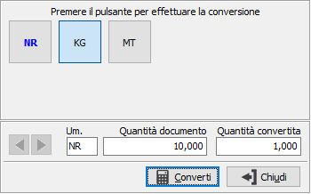

Selezione unità di misura con conversione della quantità
Per accedere alla finestra è necessario premere il tasto funzione F12 sul campo unità di misura presente nei documenti e sulle varie movimentazioni; il tasto è operativo se il rigo non risulta evaso o proveniente da altri documenti, se è presente un prodotto con più di una unità di misura e se è presente una quantità.
La finestra mostra le unità di misura del prodotto sotto forma di pulsanti, l'unità di misura e la quantità del documento; premendo il relativo pulsante viene effettuata la conversione della quantità nell'unità di misura indicata dal pulsante stesso. Sui pulsanti l'unità di misura primaria si riconosce perchè riportata in grassetto, quella attualmente presente sul documento in colore blu.

Premendo il pulsante Converti per uscire dalla finestra l'unità di misura selezionata tramite il pulsante viene assegnata al rigo del documento e la quantità convertita viene assegnata alla quantità del rigo del documento; se presente un dettaglio quantità questo viene riallineato in modo proporzionale alla nuova quantità.